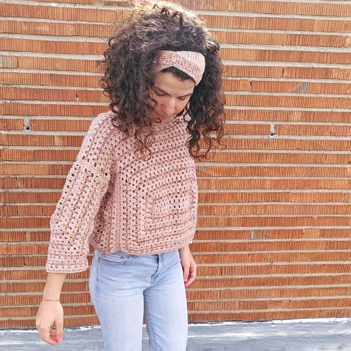
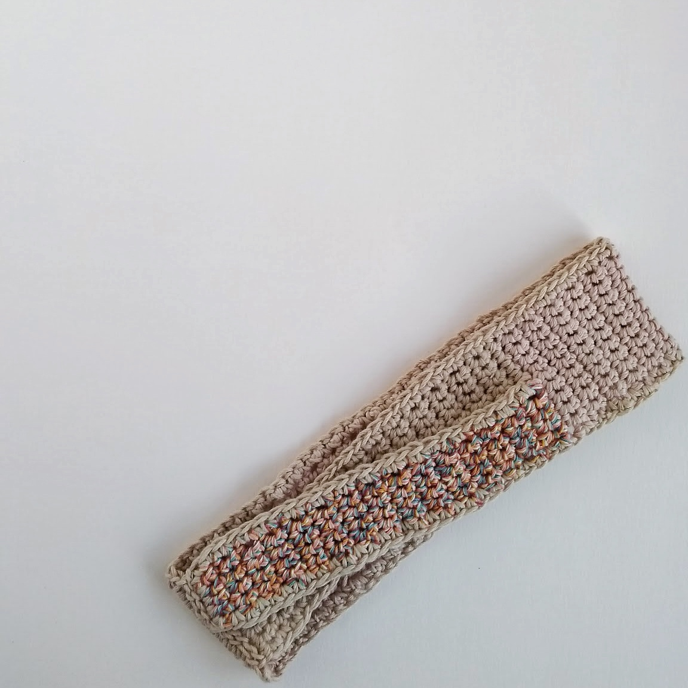
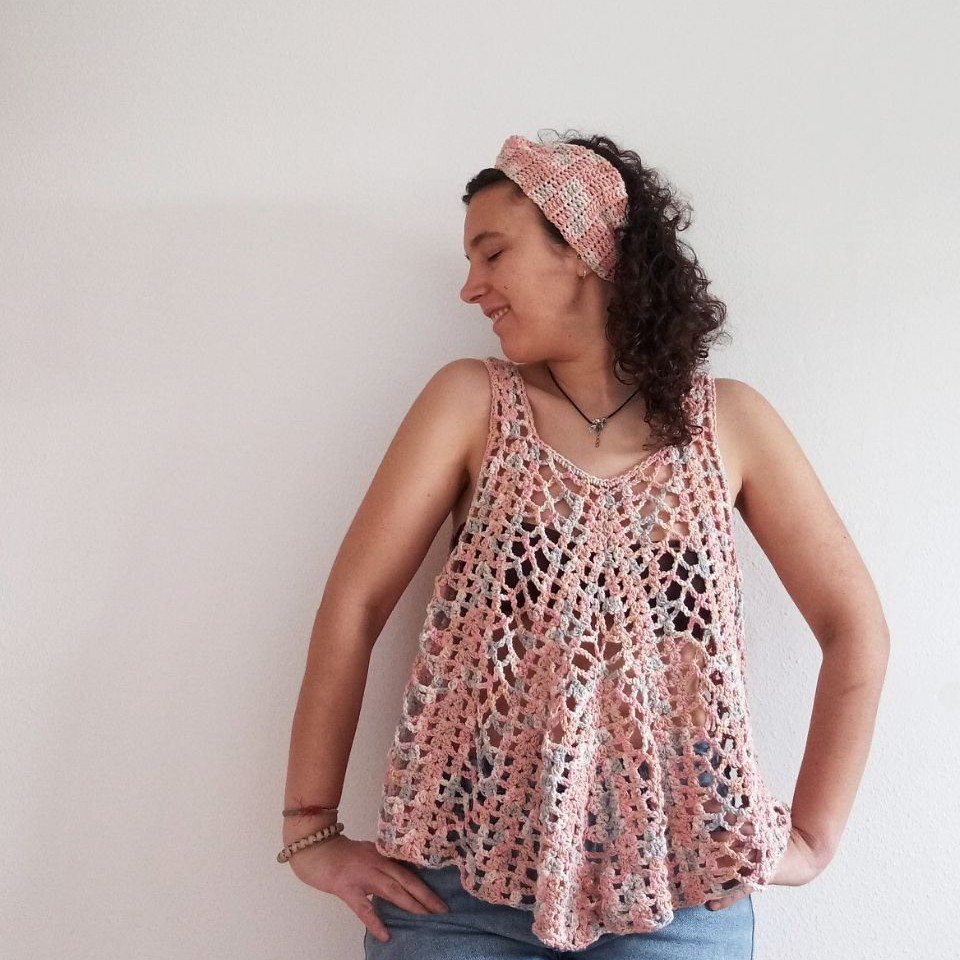
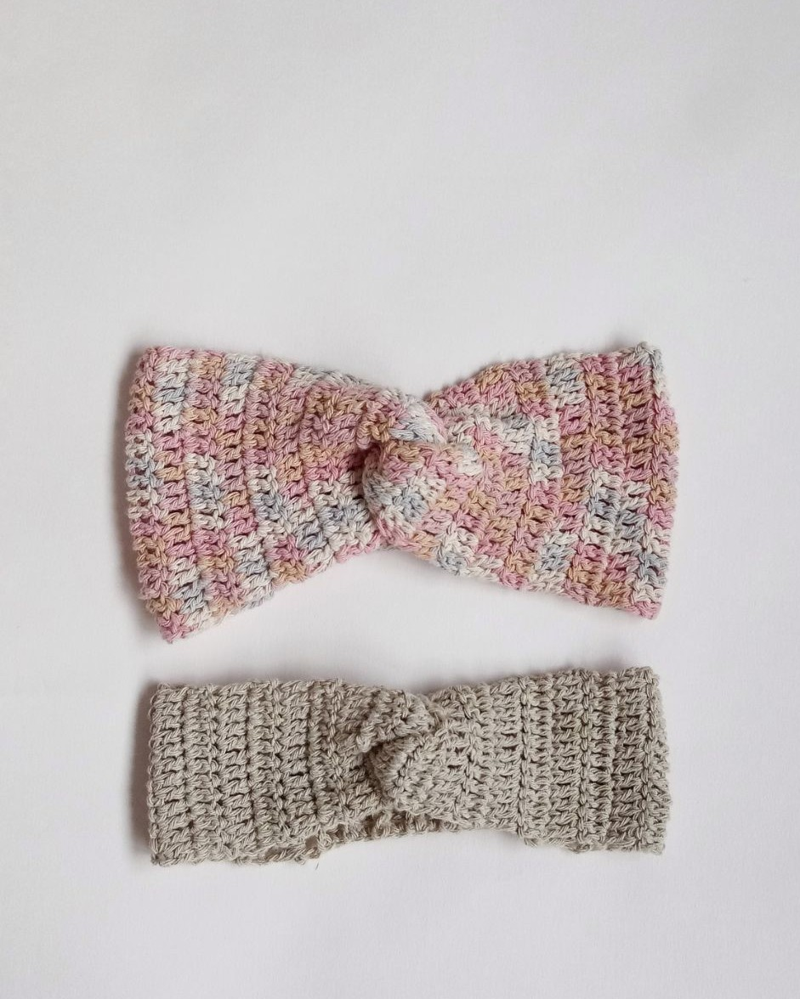

Tutorial diademas

Hoy os traemos una idea para aprovechar esos restos de hilo que te quedan después de tejer
un proyecto: turbantes y diademas. Nos encanta esta idea, ya que se tejen muy rápido, no
necesitas mucho material y quedan estupendas. Ahora en verano,
vienen genial para disimular esos días que llevas el pelo un poco despeinado y es un complemento
que alegra cualquier look. Además, si lo haces con los restos del hilo
que has usado para hacer una prenda, te puede quedar un conjunto bien bonito.
Si no sabes cómo hacerlo, te proponemos tres ideas muy sencillas para hacerte una diadema en un ratito.
Diadema 1
Nuestra primera propuesta la ideó Isa para aprovechar los restos de hilo que le quedaron al tejer el suéter 100k sp de Santa Pazienzia. El diseño está hecho en 3 colores pero puedes realizarla como más te guste.
Instrucciones
Con algodón L de Casasol y aguja ganchillo 4.5mm.
- Monta 10 cadenetas.
- Teje unas 54 líneas a punto bajo en color B.
- Cambia a color C y teje punto bajo sólo a lo largo de los primeros 5 de los 10 puntos durante 29 líneas, cierra(quedará una lengüeta a un lado ).
- Vuelve al final de la parte con color B y engancha el color A para tejer en los 5 puntos que han quedado sin tejer durante 29 líneas en punto bajo (segunda lengüeta), sin cerrar ni cortar sigue con el color A y haz un borde a punto bajo a lo largo de todo lo tejido.
- Cierra y cose el extremo del ppo del color B a las 2 lengüetas cruzadas una encima de la otra (como se ve en la foto).

Diadema 2
Esta propuesta se le ocurrió Raquel, con la idea de usar los restos que le quedaron de hacer un top calado diseñado por ella, y está inspirada en los turbantes de tela entrelazada que tan bien quedan.
Instrucciones
Con algodón reciclado Caricia Nature y aguja de ganchillo 5 mm.
- Monta 16 cadenetas.
- Teje una línea en punto alto.
- Teje 5 líneas en punto elástico. [Para tejer una línea en punto elástico: teje un punto alto, (un punto alto relieve cogido por delante, un punto alto relieve cogido por detrás)*7 veces, un punto alto]
- Gira la pieza y, por un costado, teje 18 puntos altos.
- Teje 11 líneas más a punto alto.
- Teje dos líneas de 9 puntos altos, dejando 9 sin tejer. Cierra.
- Teje dos líneas de 9 puntos altos en los 9 puntos que has dejado sin tejer. Cierra.
- Repite la parte 2 por el costado contrario.
- Cose las dos lengüetas de un costado entre sí. Debe quedarte un pequeño agujero en el medio. Introduce una de las lengüetas del otro costado por dicho agujero y cósela a la lengüeta restante.
Parte 1

Parte 2
Parte 3
Medidas aproximadas: 12cm ancho (8 cm la beige) x 50cm largo.
Diadema 3
La última idea que proponemos la creó Raquel para enviarla a su amiga invisible en conjunto
con el bolso creado para el intercambio ganchillero #swapmerakycrafts. (Si nos sigues en
Instagram, ya sabrás de lo que hablamos. Si no, no te preocupes que subiremos un post hablando de
la experiencia).
La idea es cubrir una diadema rígida con ganchillo. ¡Es muy sencillo y queda estupendo!
Instrucciones
Con una diadema de base, hilo Iris de hilaturas lm y aguja de 8 mm. Se teje en espiral.
- Teje 6 puntos bajos en un anillo mágico.
- Teje 3 líneas a punto bajo.
- Teje un aumento (2 puntos bajos en un mismo punto), teje 5 puntos bajos (7 puntos)
- Teje 3 líneas a punto bajo.
- Teje un aumento (2 puntos bajos en un mismo punto), teje 6 puntos bajos (8 puntos)
- Teje 3 líneas a punto bajo.
- Teje un aumento (2 puntos bajos en un mismo punto), teje 7 puntos bajos (9 puntos)
- Teje 4 líneas a punto bajo.
- Teje un aumento (2 puntos bajos en un mismo punto), teje 8 puntos bajos (10 puntos)
- Teje 1 línea a punto bajo.
- Teje una disminución (2 puntos bajos juntos), teje 8 puntos bajos (9 puntos)
- Teje 4 líneas a punto bajo.
- Teje una disminución (2 puntos bajos juntos), teje 7 puntos bajos (8 puntos)
- Al llegar a este punto, prueba a meter la diadema de base en la funda que estás tejiendo. Si entra justa, déjala dentro y empieza a tejer en torno a la diadema. Si no, puedes hacerlo un poco más adelante.
- Teje 3 líneas a punto bajo.
- Teje una disminución (2 puntos bajos juntos), teje 6 puntos bajos (7 puntos)
- Teje 3 líneas a punto bajo.
- Teje una disminución (2 puntos bajos juntos), teje 5 puntos bajos (6 puntos)
- Teje 4 líneas a punto bajo.
- Cierra, corta el cabo y pásalo por los puntos de la última línea, apretando para cerrar.
¿Qué te han parecido nuestras propuestas? ¿Te animas a probar alguna? Nos haría muchísima ilusión que compartáis con nosotras vuestras diademas. También podéis contarnos si tenéis otras ideas para aprovechar los restos de hilo o si queréis que os compartamos más. Como siempre, si tenéis cualquier duda o comentario, no dudéis en poneros en contacto con nosotras por Instagram o por correo.